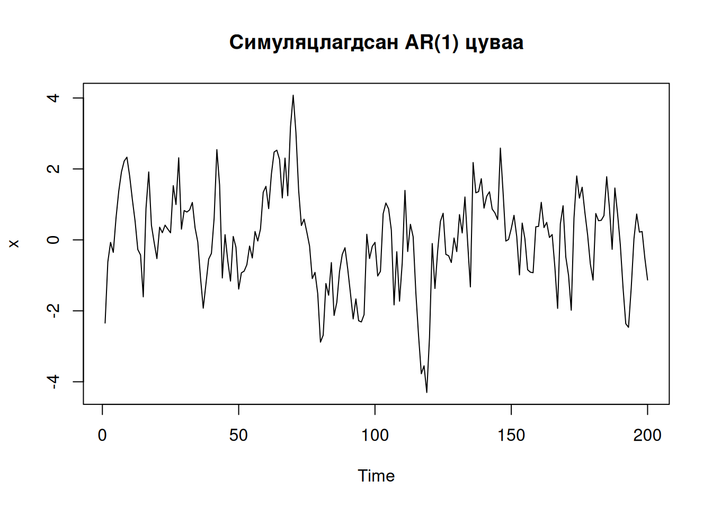

n <- length(AirPassengers)
train <- window(
AirPassengers,
end = c(1958,12)
)
test <- window(
AirPassengers,
start = c(1959,1)
)10 Таамаглал
10.1 Оршил
Таамаглал нь хугацааны цувааны шинжилгээний үндсэн зорилтуудын нэг юм.
Таамаглал гэдэг нь одоогийн цагт байгаа мэдээлэлд үндэслэн ирээдүйн ажиглалтуудыг урьдчилан таамаглахыг хэлнэ.
Таамаглалыг дараахь салбаруудад ашигладаг:
- эдийн засаг,
- санхүү,
- байгаль орчны шинжлэх ухаан,
- эрчим хүчний эрэлтийн төлөвлөлт,
- нийгмийн эрүүл мэнд,
- бизнесийн аналитик.
Зорилго нь тодорхойгүй байдлын хэмжүүрийн хамт үнэн зөв таамаглал гаргах явдал юм.
10.2 Таамаглалын үндсэн тэмдэглэгээ
\(t\) хугацаа хүртэл ажиглалтууд байгаа гэж үзье.
\(t\) хугацаанд \(h\) алсын зайд хийсэн таамаглалыг
\[ \hat{Y}_{t+h|t} \]
гэж тэмдэглэнэ.
Энэ нь \(t\) хугацаанд байгаа мэдээлэлд үндэслэн
\[ Y_{t+h} \]
-ийн таамаглалыг илэрхийлнэ.
10.2.1 Нэг алхамын таамаглал
\[ \hat{Y}_{t+1|t}. \]
10.2.2 Олон алхамын таамаглал
\[ \hat{Y}_{t+h|t}. \]
энд
\[ h=2,3,\ldots \]
10.3 Таамаглалын алдаа
Таамаглалын алдаа нь
\[ e_{t+h} = Y_{t+h} - \hat{Y}_{t+h|t}. \]
Сайн таамаглалын загварууд бага таамаглалын алдаа гаргадаг.
10.4 Таамаглалын нарийвчлалын хэмжүүрүүд
10.4.1 Дундаж алдаа (ME)
\[ ME = \frac{1}{n} \sum_{t=1}^{n} e_t. \]
Таамаглалын хазайлтыг хэмждэг.
10.4.2 Дундаж абсолют алдаа (MAE)
\[ MAE = \frac{1}{n} \sum_{t=1}^{n} |e_t|. \]
Анхны нэгжээр илэрхийлэгддэг тул тайлбарлахад хялбар.
10.4.3 Дундаж квадрат алдаа (MSE)
\[ MSE = \frac{1}{n} \sum_{t=1}^{n} e_t^2. \]
Том алдаануудад илүү их жин өгдөг.
10.4.4 Квадрат дундажийн язгуур алдаа (RMSE)
\[ RMSE = \sqrt{MSE}. \]
Хамгийн өргөн хэрэглэгддэг хэмжүүрүүдийн нэг.
10.4.5 Дундаж абсолют хувийн алдаа (MAPE)
\[ MAPE = \frac{100}{n} \sum_{t=1}^{n} \left| \frac{e_t}{Y_t} \right|. \]
Алдааг хувиар илэрхийлдэг.
10.5 Сургалтын ба тестийн олонлогууд
Таамаглалын гүйцэтгэлийг үнэлэхийн тулд өгөгдлийг ихэвчлэн дараахь байдлаар хуваадаг:
10.5.1 Сургалтын олонлог
Загварын параметрүүдийг үнэлэхэд ашиглана.
10.5.2 Тестийн олонлог
Таамаглалын нарийвчлалыг үнэлэхэд ашиглана.
Жишээ:
10.6 Жишиг таамаглалын аргууд
Нарийн төвөгтэй загваруудыг тохируулахаас өмнө жишиг таамаглалуудыг авч үзэх хэрэгтэй.
10.6.1 Дундаж таамаглал
\[ \hat Y_{t+h} = \bar Y. \]
Бүх ирээдүйн таамаглалууд түүхэн дундажтай тэнцүү.
10.6.2 Энгийн (naive) таамаглал
\[ \hat Y_{t+h} = Y_t. \]
Дараагийн ажиглалт нь хамгийн сүүлийн ажиглалттай тэнцүү гэж үзнэ.
10.6.3 Дрифт таамаглал
\[ \hat Y_{t+h} = Y_t + h \frac{Y_t-Y_1}{t-1}. \]
Түүхэн трендийг урагшлуулна.
10.6.4 Улирлын энгийн таамаглал
Улирлын өгөгдлийн хувьд
\[ \hat Y_{t+h} = Y_{t+h-m}, \]
энд (m) нь улирлын үе.
10.7 Жишээ: Энгийн таамаглал
library(forecast)
fit <- naive(AirPassengers)
autoplot(fit)Энгийн арга нь олон эдийн засаг, санхүүгийн хугацааны цуваанд гайхмаар үр дүнтэй байдаг.
10.8 AR(1) таамаглал
Дараахьыг авч үзье:
\[ Y_t = \phi Y_{t-1} + \varepsilon_t. \]
Нэг алхамын таамаглал нь
\[ \hat Y_{t+1|t} = \phi Y_t. \]
(h)-алхамын таамаглал нь
\[ \hat Y_{t+h|t} = \phi^h Y_t. \]
(h) үед таамаглал процессын дундаж руу ойртдог.
10.9 ARIMA таамаглал
ARIMA загвар тохируулсан гэж үзье.
library(forecast)
fit <- auto.arima(AirPassengers)
fitТаамаглалыг дараахь байдлаар гаргана:
fc <- forecast(
fit,
h = 24
)
autoplot(fc)Гаралт нь дараахь зүйлийг агуулна:
- цэгэн таамаглалууд,
- таамаглалын интервалууд,
- ирээдүйн алсын зай.
10.10 Таамаглалын интервалууд
Зөвхөн цэгэн таамаглал хангалтгүй.
Таамаглалын интервалууд тодорхойгүй байдлыг тоон хэлбэрээр илэрхийлдэг.
95% таамаглалын интервал нь дараах хэлбэртэй:
\[ \hat Y_{t+h} \pm 1.96 \times SE(\hat Y_{t+h}). \]
Таамаглалын тодорхойгүй байдал ерөнхийдөө алсын зайны урттай хамт нэмэгддэг.
10.11 Жишээ: AirPassengers өгөгдөл
library(forecast)
fit <- auto.arima(AirPassengers)
fc <- forecast(
fit,
h = 24
)
plot(fc)Ажиглаарай:
- нэмэгдэж буй тодорхойгүй байдал,
- улирлын бүтэц,
- өргөжиж буй таамаглалын интервалууд.
10.12 Үлдэгдлийн оношлогоо
Таамаглалын загвар нь цагаан чимээтэй төстэй үлдэгдэл үлдээх ёстой.
10.12.1 Үлдэгдлийн график
checkresiduals(fit)10.12.2 Хүсээгүй шинж чанарууд
Үлдэгдэл нь дараахь шинж чанаруудыг харуулах ёстой:
- тэг дундаж,
- тогтмол дисперс,
- ач холбогдолтой автокорреляцгүй байх.
10.13 Ljung-Box шалгалт
Ljung-Box шалгалт нь үлдэгдлийн автокорреляцууд үлдсэн эсэхийг шалгадаг.
10.13.1 Таамаглалууд
\[ H_0: \text{Үлдэгдлүүд корреляцгүй} \]
\[ H_1: \text{Үлдэгдлийн автокорреляц байна}. \]
10.13.2 Жишээ
Box.test(
residuals(fit),
lag = 20,
type = "Ljung-Box"
)Том p-утга нь загварын тохиромжтой байдлыг дэмждэг.
10.14 Таамаглалын ажлын урсгал
Ердийн таамаглалын журам нь:
- Цувааг зурах.
- Стационар байдлыг шалгах.
- Шаардлагатай бол ялгавар авах.
- ACF ба PACF-ийг шалгах.
- Боломжит загваруудыг тохируулах.
- AIC утгуудыг харьцуулах.
- Үлдэгдлийн оношлогоог шалгах.
- Таамаглалуудыг гаргах.
- Таамаглалын нарийвчлалыг үнэлэх.
10.15 Симуляцлагдсан AR(1) өгөгдөл ашигласан жишээ
set.seed(123)
x <- arima.sim(
model=list(ar=.8),
n=200
)
plot.ts(
x,
main="Симуляцлагдсан AR(1) цуваа"
)
Загварыг үнэл:
fit <- arima(
x,
order=c(1,0,0)
)
fit
Call:
arima(x = x, order = c(1, 0, 0))
Coefficients:
ar1 intercept
0.7235 -0.0239
s.e. 0.0491 0.2363
sigma^2 estimated as 0.8744: log likelihood = -270.73, aic = 547.46Үнэлсэн параметрийг жинхэнэ утгатай харьцуул.
10.16 Таамаглалын алсын зай
Таамаглалын чанар ерөнхийдөө алсын зай нэмэгдэх тусам буурдаг.
10.16.1 Богино хугацааны таамаглалууд
- Ихэвчлэн илүү нарийвчлалтай.
- Бага таамаглалын интервалууд.
10.16.2 Урт хугацааны таамаглалууд
- Илүү их тодорхойгүй байдал.
- Өргөн таамаглалын интервалууд.
10.17 Практик анхаарах зүйлс
Сайн таамаглал нь дараахь зүйлийг шаарддаг:
- хангалттай өгөгдлийн чанар,
- тохиромжтой үед стационар байдал,
- болгоомжтой загварын сонголт,
- оношлогооны шалгалт.
Таамаглал нь зөвхөн түүвэр доторх хамгийн бага алдаа гаргах тухай биш, харин найдвартай ирээдүйн таамаглалуудыг гаргах тухай юм.
10.18 Дүгнэлт
Таамаглал нь олон хугацааны цувааны шинжилгээний төв зорилго юм.
Чухал ойлголтууд нь:
- таамаглалын алсын зай,
- таамаглалын алдаа,
- MAE,
- MSE,
- RMSE,
- MAPE,
- таамаглалын интервалууд,
- үлдэгдлийн оношлогоо.
ARIMA загварууд нь стационар ба стационар бус хугацааны цувааг таамаглах хүчирхэг хүрээг бүрдүүлдэг.
Үнэн зөв таамаглал нь дараахь зүйлийг шаарддаг:
- зохистой загвар тодорхойлох,
- параметрийн үнэлгээ,
- загварын баталгаажуулалт,
- тодорхойгүй байдлын бодит үнэлгээ.
10.19 Дасгал
- Хугацааны цуваанд энгийн таамаглалын загварыг тохируул.
- MAE ба RMSE-ийг тооцоол.
- Цувааг сургалтын ба тестийн олонлогт хуваа.
- AR(1) загварыг тохируулж, таамаглал гарга.
auto.arima()ашиглан ARIMA загварыг тохируул.- Өрсөлдөж буй загваруудын таамаглалын нарийвчлалыг харьцуул.
- 95% таамаглалын интервалуудыг байгуул.
- Үлдэгдэлд Ljung-Box шалгалт гүйцэтгэ.
- Таамаглалын тодорхойгүй байдал яагаад алсын зайны урттай хамт өсдөг вэ гэдгийг тайлбарла.
- Ижил цувааны хувьд энгийн таамаглал ба ARIMA таамаглалыг харьцуул.